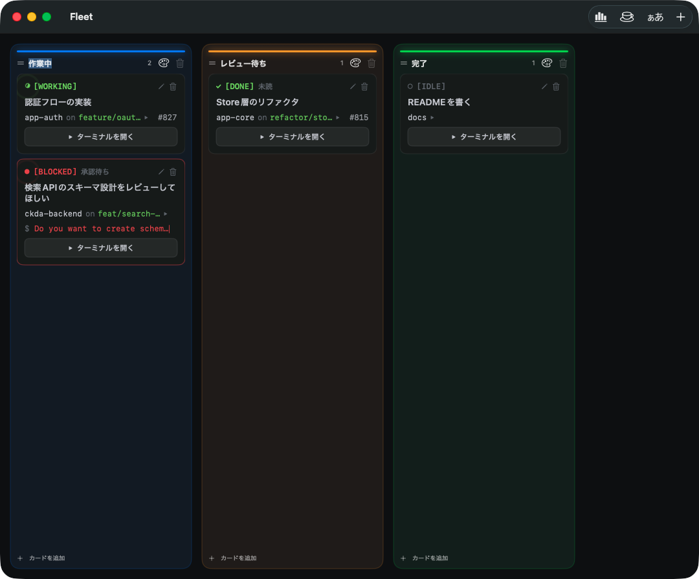

Command a fleet of Claude Code agents. 並走する Claude Code エージェントを「艦隊」として率いる。
Line up your Claude Code sessions as cards on a Kanban board and see which agent is working, waiting for approval, or done — without opening a single terminal. 複数の Claude Code セッションをカンバンのカードとして並べ、どのエージェントが動作中か・承認待ちか・完了したかを、ターミナルを開かずに一望する macOS アプリ。

Connect cards with a curve to put their agents in one channel. They share a memory (fleet_recall / remember), see each other's live status (fleet_peers), and push messages or hand off work straight into a peer's session (fleet_message / fleet_handoff) — delivered the moment that agent is free. All local — no cloud.カードを曲線でつなぐと Agent 群が1つのチャンネルに。共有メモリ (fleet_recall / remember)、仲間のライブ状態 (fleet_peers)、相手のセッションへ直接 push・引き継ぎ (fleet_message / fleet_handoff) が可能で、相手の手が空いた瞬間に届く。すべてローカル完結。
Working, blocked, done or idle — detected from each terminal. The active agent pulses like a radar blip.稼働中・承認待ち・完了・待機を端末出力から判定。稼働機はレーダーのブリップのように脈打つ。
A blocked agent shows exactly what it's asking, right on the card, with a blinking caret.ブロック中のエージェントが何を尋ねているかをカード上に表示。点滅キャレット付き。
Launch a real terminal (SwiftTerm) full-screen from any card. The session keeps running after you close it.カードから全画面ターミナル（SwiftTerm）を起動。閉じてもセッションは動き続ける。
Pick a previous Claude Code session — with a preview of its last conversation, so you never resume the wrong one.以前のセッションを直近会話のプレビュー付きで選んで再開。誤ったセッションを掴まない。
cwd, git branch and linked PR on every card. Markdown preview with Mermaid and syntax highlighting, fully offline.cwd・ブランチ・PR をカードに集約。mermaid 図とシンタックスハイライト対応の Markdown プレビュー（オフライン）。
Terminal color themes and fonts, a token-usage dashboard, drag-to-reorder columns, English / Japanese UI.ターミナルのテーマ/フォント、トークン使用量、列の並べ替え、英語/日本語 UI。
Agents running side by side move as a fleet, not one ship at a time.
Fleet is a local, offline cockpit that gathers your scattered sessions onto a single radar.
並走する Agent は、一隻ずつではなく艦隊で動く。
Fleet はローカル完結の司令塔として、散らばったセッションを一枚のレーダーに集約する。
Requires macOS 26+ 要件: macOS 26+
brew install --cask fuwasegu/tap/fleet
The cask removes the quarantine flag, so it just launches. cask が検疫属性を自動除去するので、そのまま起動できます。